Ямал / Муравленко
Дом культурыНовая глава
Как изменилось место, где город встречается, репетирует и выходит на сцену.
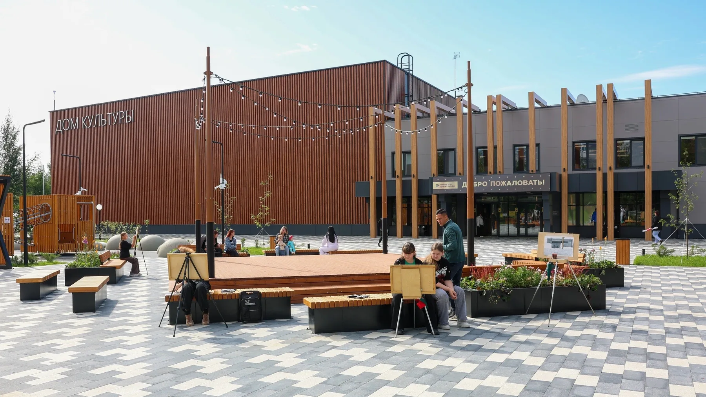
01 / Городской архив
Когда всё начиналось
В 1986 году в посёлке Муравленковском появился клуб «Каштан». С 1988 года он назывался Домом культуры «Украина».

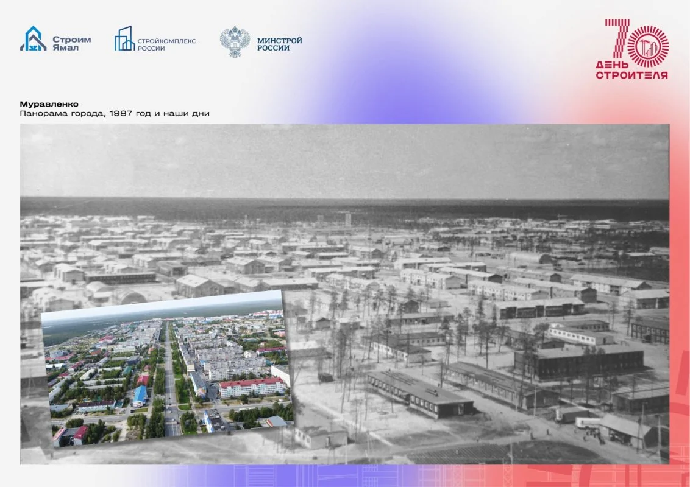

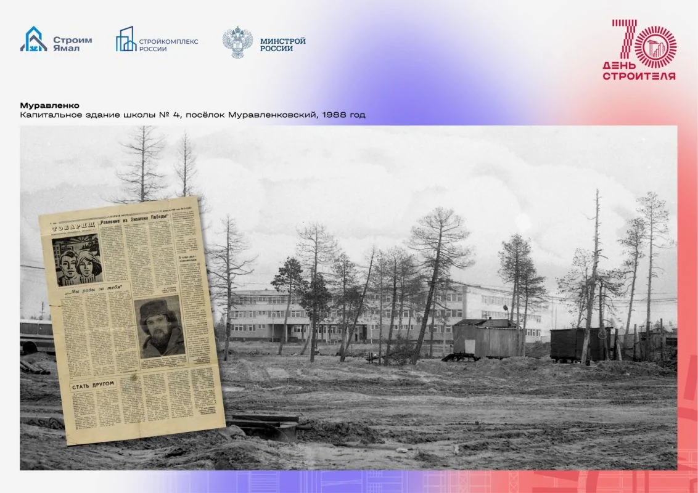
02 / Замысел
От эскиза к зданию
Проект объединил обновление фасада и залов с благоустройством площади, где проходят городские события.
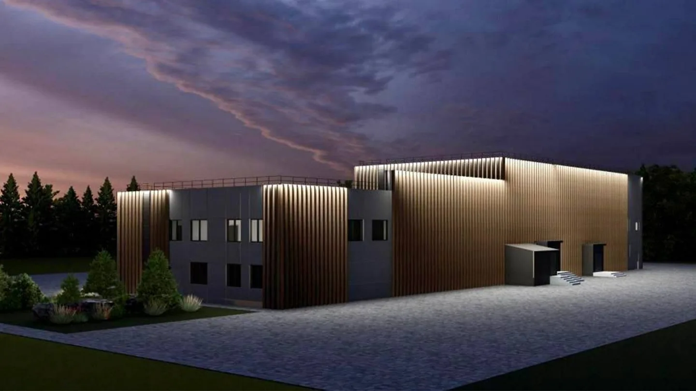
03 / Ход работ
Здание в работе
Фасад, входная группа и внутренние помещения на разных этапах капитального ремонта.

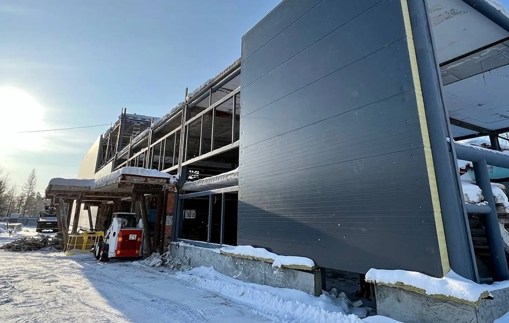

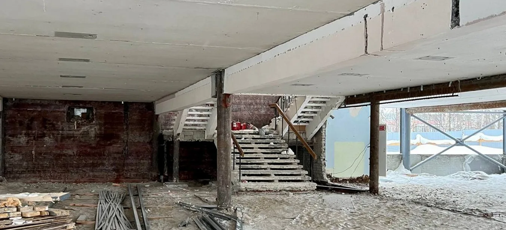

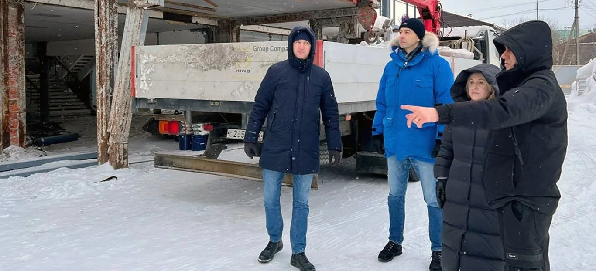
04 / Смена облика
До и после
Два ракурса входной группы. Передвигайте ползунок, чтобы рассмотреть старый и обновлённый фасады.
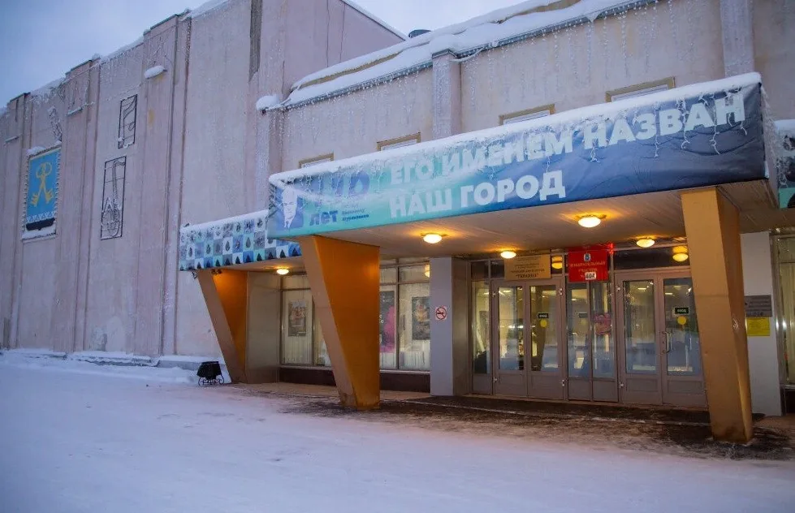
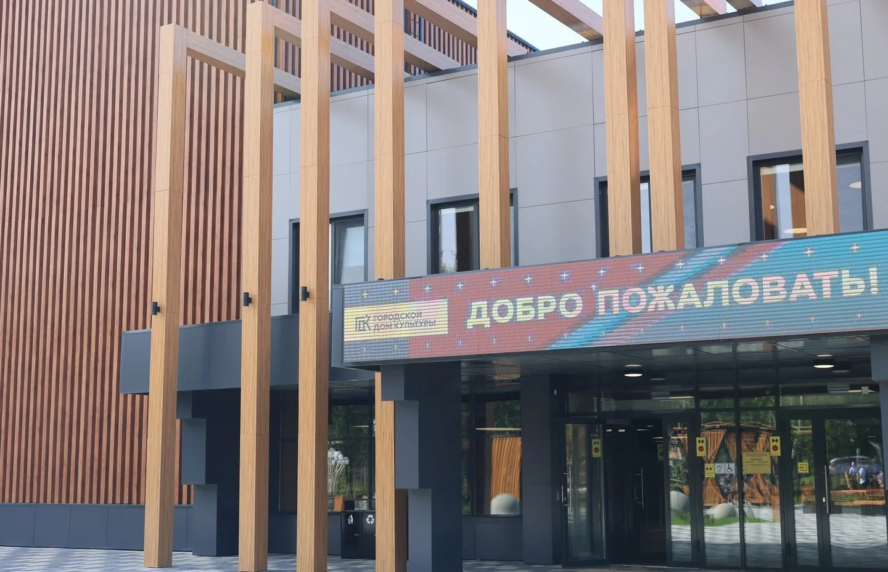


05 / Новая глава
Сцена и репетиции
После ремонта в Доме культуры снова проходят концерты, занятия и репетиции творческих коллективов.

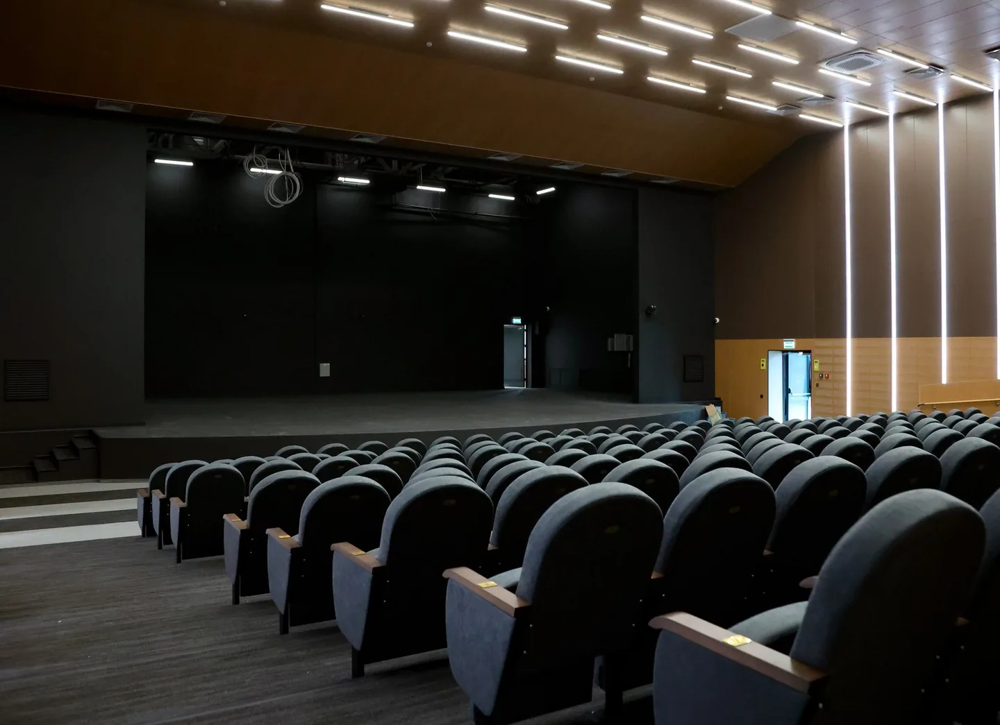

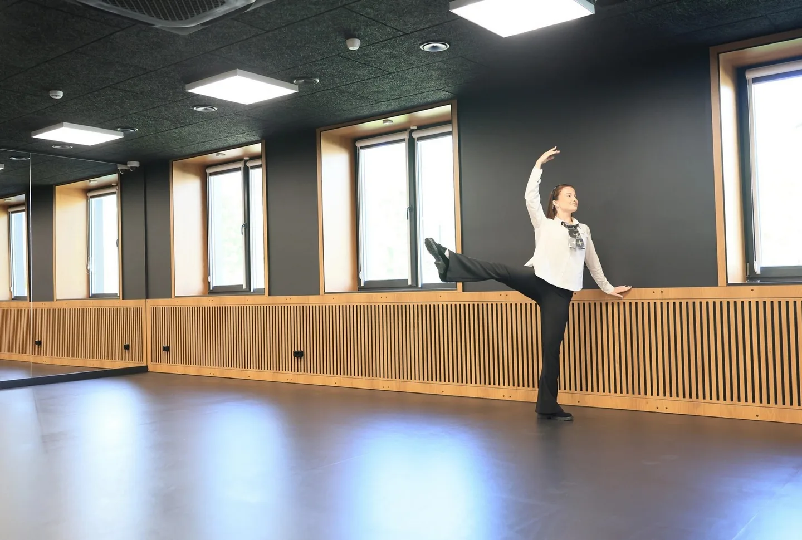
06 / Территория
Место для встреч
На площади у Дома культуры появились места для отдыха и площадка для событий под открытым небом.

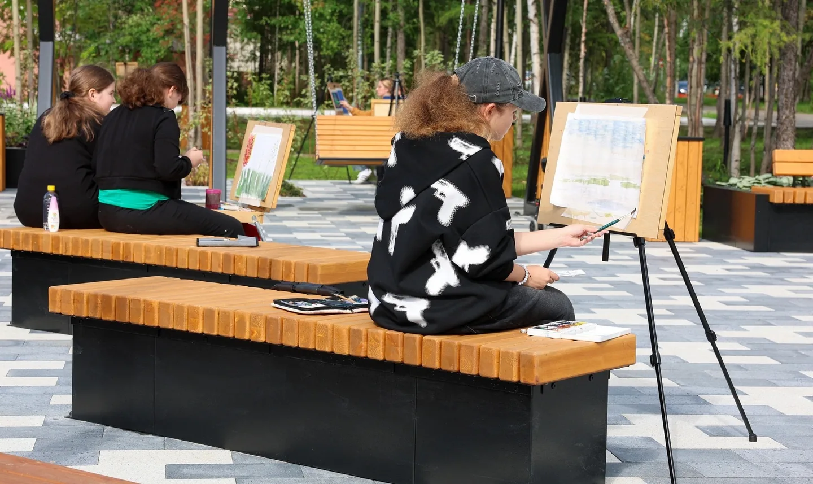

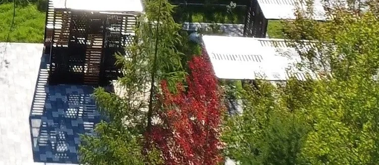

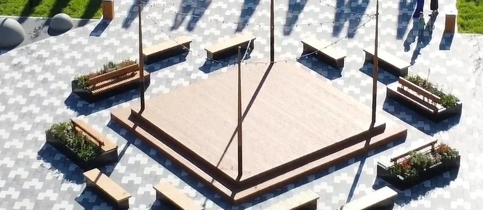
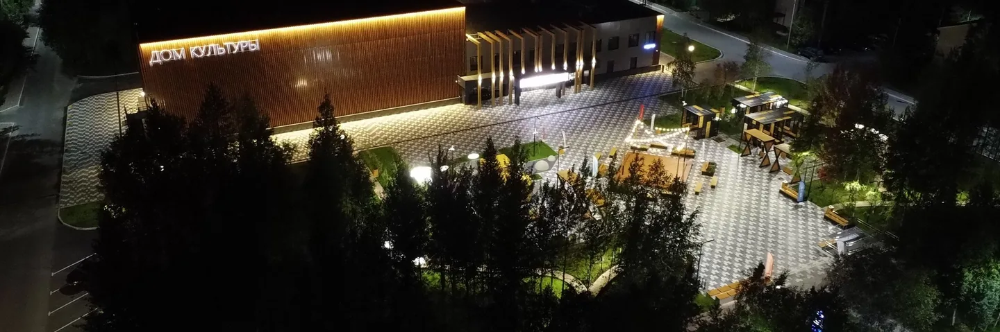
Как добраться
Дом культуры на карте
Ямало-Ненецкий автономный округ, Муравленко, улица Ленина, 61.